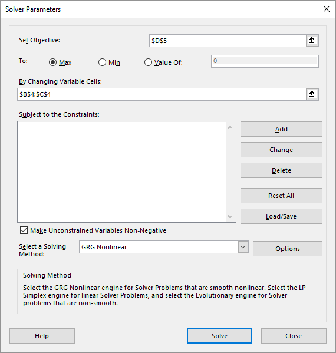
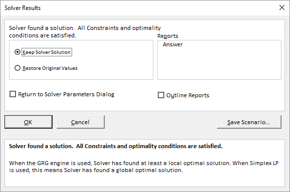
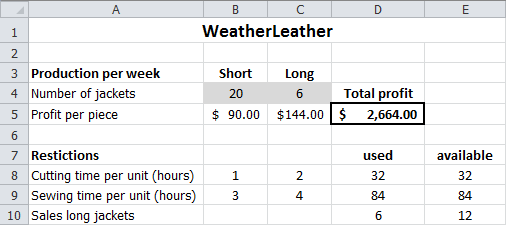

Task: Solver example
Step-by-step description on how to use the Solver for the case WeatherLeather.
As an example the case study WeatherLeather is used. In this case the profit must be maximized.
File: WeatherLeather.xlsx
- Open the practice file.
- Select the object cell D5.
- Choose tab Data > Solver (group Analyze).
- Verify that the address $D$5 is filled in the box Set Objective.
- Verify that the choice Max is selected for To.
-
Click in the box By Changing Variable Cells and select
in the worksheet the cell range B4:C4.
Figure 1: Dialog box Solver Parameters Note: Excel converts B4:C4 to $B$4:$C$4. -
Click on Add.
Figure 2: Dialog box Add Constraint -
Enter a restriction D8 <= E8 and click on
OK.
The dialog box Solver Parameters appears again and Excel has the first restriction converted to: $D$8 <= $E$8.
- Click on Add.
-
Enter the restriction D9 <= E9 and now click on
Add.
Now the empty dialog box Add Constraint is displayed. You don't see now that Excel has added the second restriction.Tip: By clicking on Add in stead of OK you can add the restrictions easily without having to return to the Solver Parameters again.
- Enter the restriction D10 <= E10 and click on Add.
- Enter the restriction B4:C4 >= 0 and click on Add.
- Enter the next restriction B4:C4 int.
-
All restrictions have been added. Click OK.
Figure 3: Solver Parameters for WeatherLeather Note: Excel has converted int to integer in the box Constraint. -
Click on Solve.
After short time the results pane of the Solver appears.
Figure 4: Solver Results  -
Select Keep Solver Solution (default). Select
Answer (section Reports) and then click
OK.
The solution found by the Solver is now displayed in the worksheet.
Figure 5: Worksheet with solution And there has also been created a new worksheet with the name Answer Report ....
Figure 6: Answer Report for WeatherLeather Tip: The names that are used in the report are not always accurate or clear. This is because Excel takes these names out of the the text cells in the surrounding area. To ensure there are good names in the report, you first have to supply meaningful names to the relevant cells in the worksheet. This is highly recommended.Attention: At the section Constraints in the Answer Report you can see in the column Status which restrictions are Binding. If so, this indicates that the limit of the constraint is reached and there is no slack. In this example you can see that all capacity for the cutting time and sewing time is used. For the long jackets, the limit for the market is not reached, there could be 6 more pieces sold.